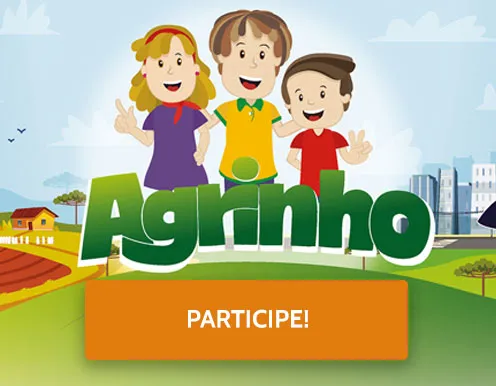
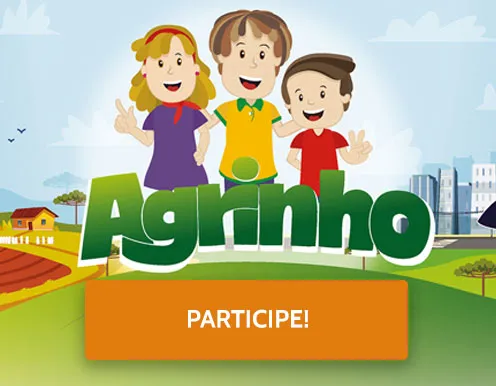

Concurso Agrinho 2025
 

ISABELA n:10
Desenvolvido pelo Sistema Faep, em parceria com o Governo do Paraná, o concurso tem como tema nesta edição "Festejando a Conexão Campo-Cidade". As categorias para alunos e professores de escolas estaduais são AgroRobótica, Robótica e Relatório de Pesquisa – essa com o tema Boas Práticas Agrícolas. .
O objetivo do Programa Agrinho é promover a educação e conscientização sobre a agricultura e o meio ambiente, principalmente nas áreas rurais.
Oferece um conjunto diversificado de categorias para alunos e professores da rede estadual, incluindo:Redação;Desenho;Robótica e AgroRobótica;Relatório de Pesquisa;Programação;Experiência Pedagógica e Relato Escola Agrinho;Relatório Município Agrinho;Relatório de Pesquisa;Robótica;
A grande final será em outubro e premiará os vencedores com prêmios como notebooks, smartphones e tablets.